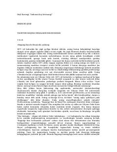

IBTashvishlardan xalos bo'lib, bugungi kun bilan yashash san'atini o'rganing.
Ushbu kitob mashhur yozuvchi Deyl Karnegi tomonidan yozilgan bo'lib, insonlarga tashvish va stressni yengish hamda bugungi kun bilan yashash san'atini o'rgatadi. Muallif o'tmish va kelajak haqidagi ortiqcha o'ylardan voz kechib, hozirgi lahzaning qadriga yetish va samarali mehnat qilish yo'llarini tushuntiradi.